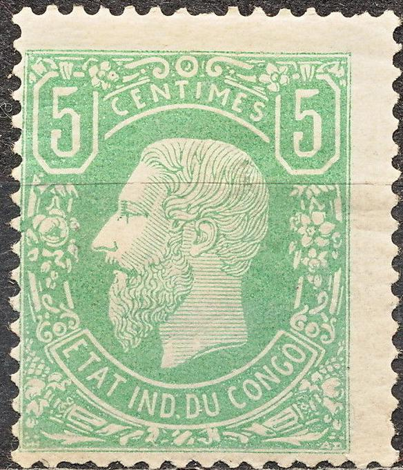
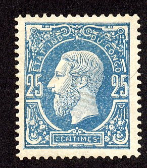
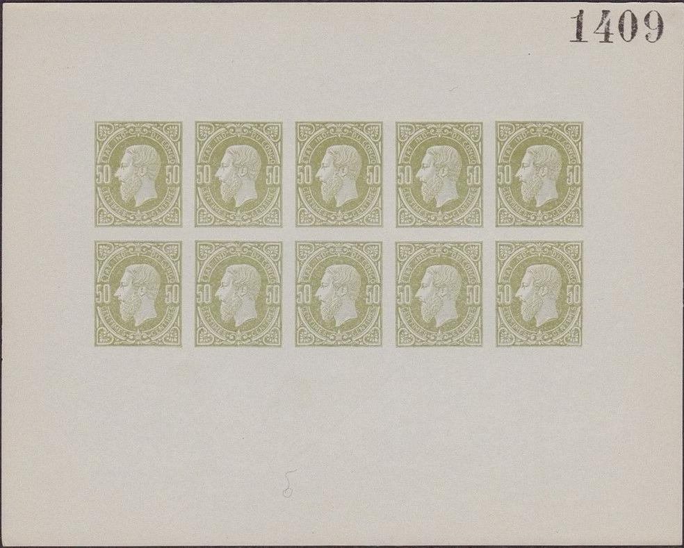
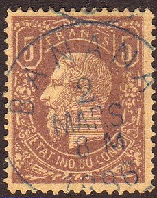
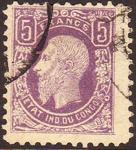
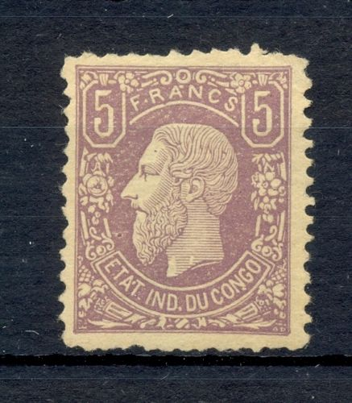
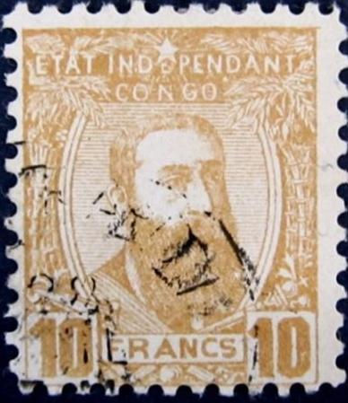
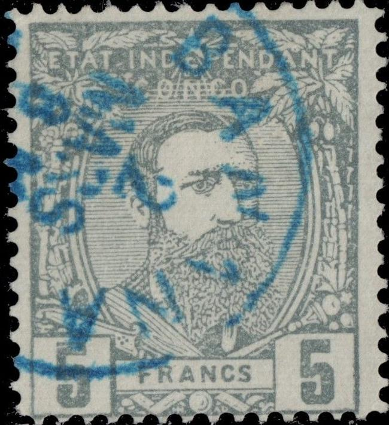
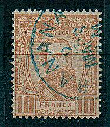

Congo Belge - Belgisch Congo - Belgisch Kongo
Return To Catalogue - Belgian Congo 1894-1908 - Belgian Congo 1909-1920 and miscellaneous - Ruanda-Urundi
Note: on my website many of the
pictures can not be seen! They are of course present in the
catalogue;
contact me if you want to purchase it.
5 c green 10 c red 25 c blue 50 c green 5 F lilac Overprinted "COLIS POSTAUX" (for parcels)

Genuine 'COLIS POSTAUX' overprint, reduced size
'3.50 Fr' on 5 F lilac
These stamps are perforated 15 and designed by H.Hendrick, the engraving was done by A.Doms of the stamp factory (Zegelfabriek) in Mechelen. The stamps were printed by the 'Atelier du Timbre' in Malines (source: http://www.congostamps.com/independentstatecongo/1IndependentState1886.htm).
Value of the stamps |
|||
vc = very common c = common * = not so common ** = uncommon |
*** = very uncommon R = rare RR = very rare RRR = extremely rare |
||
| Value | Unused | Used | Remarks |
| 5 c | * | * | Stamps issued: 120,000 |
| 10 c | * | * | Stamps issued: 90,000 |
| 25 c | *** | ** | Stamps issued: 60,000 |
| 50 c | ** | ** | Stamps issued: 60,000 |
| 5 F | RR | RR | Stamps issued: 4,800 (including the ones overprinted "COLIS POSTAUX") |
| Overprinted "COLIS POSTAUX" | |||
| 3.50 F on 5 F | RRR | RRR | Only 300 issued. An error '8.50 F' on 5 F seems to exist |
Postcard in the same design:

15 c brown postcard.
15 c lilac, I have also seen 15 c blue
For the specialist: the genuine stamps are always perforated 15.
Fraudulent private reprints exist of the centimes values (Lenoir reprints). They also exist imperforate (genuine imperforate stamps do not exist). These reprints exist with forged cancels. I've seen sheets of 10 (2x5) of the 5 c, 25 c and 50 c values. The 10 c Lenoir reprint should also exist. Apparently Lenoir got the plates during the First World War. He printed his reprints in sheetlets of 10 stamps. He did not make any reprints of the 5 F stamp.



The 50 c is known to have been forged, the words "CENTIMES" are badly done. An image can be found in the Billig book. Sorry, no image available yet.

Forgery.
Forgeries also exist of the 5 Fr (among them 2 Fournier forgeries, the Billig handbook lists 7 forgeries). They are often deceptive, but can be recognized especially by the shades and the details of the hair (source http://users.skynet.be/chst/falsification.htm). One forgery (Fournier?) can be distinghuished by the appearance of two small dots behind the "F" of "FRANC". Another Fournier forgery has, in my opinion, the "5" too small. I suspect the next stamps to be such Fournier forgeries:



Fournier forgeries with the '5's too small. I've also seen it
with a "BOMA 3 OCTO 8-11 1886" cancel as shown below.
I've also seen this forgery pasted on a piece of paper (with the
"BANANA 2 MARS 8M 1888" cancel). Note that the
"C" of "CONGO" is too open.


Fournier forgeries, different type. Third image shows an
unfinished forgery as can be found in the Fournier Album.
The second forgery above has a cancel "BANANA 2 MARS 8 M 1886" and the third "BOMA 3 OCTO 8-M 1886", as illustrated in the 'Fournier album of philatelic forgeries':
Forged Fournier cancels, reduced sizes


Forgeries taken from a Fournier Album. Note that there are two
types of Fournier forgeries (see the size of the "5"s).


A forgery with a strange beard and the lettering different. It
(always?) has a "MATADI 28 JUIL 7 M 1887" in a single
circle cancel. Are these made by the stamp forger Oneglia?

A Senf forgery. It was given away as a
"KUNST-BEIGABE" (= art supplement) to the stamp journal
the Illustrirten Briefmarken-Journal of 21 August 1886. It
sometimes has the word "falsch" printed on it. Note the
strange "S" of "FRANCS". Next to it some
illustrations of a Schaubek Album with the same image in black
(the Schaubek Albums were also issued by Senf).

Imperforate stamp, most likely the first forgery of the Billig
book, with a longer right bottom leg of the "R" of
"FRANCS".

I've been told that this is a Geneva forgery, I have no further
information (it might be the same forgery as the one shown
above). Note the white dot below the "N" of
"CONGO".
Other forgery



Highly dubious items. Two of them with a "LEOPOLDVILLE 9 DEC
?" cancel.
Website with more information on the parcel stamps: http://www.congostamps.com/independentstatecongo/3MailParcelStamps.htm.
(Reduced size)
5 c green 10 c red 25 c blue 50 c brown 50 c grey 5 F violet 5 F grey 10 F orange 25 F grey (not issued?) 50 F grey (not issued?) Overprinted "COLIS POSTAUX" (parcel stamps)


(Genuine?)
'3.50 Fr' on 5 F violet '3.50 Fr' (in a rectangle, overprint black or blue) on 5 F violet '3.50 Fr' (in a rectangle) on 5 F grey
For the specialist: the genuine stamps are always perforated 15.
Value of the stamps |
|||
vc = very common c = common * = not so common ** = uncommon |
*** = very uncommon R = rare RR = very rare RRR = extremely rare |
||
| Value | Unused | Used | Remarks |
| 5 c | c | c | |
| 10 c | c | c | |
| 25 c | c | * | |
| 50 c brown | ** | ** | |
| 50 c grey | * | * | |
| 5 F violet | RR | R | |
| 5 F grey | R | R | |
| 10 F | R | R | |
| Oveprinted "COLIS POSTAUX" | |||
| 3.50 F on 5 F violet | RRR | RRR | without rectangle Only 500 issued. |
| 3.50 F on 5 F violet | RRR | RRR | with rectangle 500 to 1000 stamps issued |
| 3.50 F on 5 F grey | RRR | RRR | 1000 to 2000 stamps issued. |

5 F stamp with "SPECIMEN" overprint.
Forgeries:



(Forgeries, wrong perforations)
Besides the perforation, which is different from the genuine stamps, all the above stamps are cancelled with: "MATADI 28 JUIL 7 M 1887" in a single circle, the same cancel that also appeared on some of the forgeries of the previous issue. The word "FRANCS" is larger than in a genuine stamp. These could be Oneglia products.

This forgery of the 5 F has the word "FRANCS" much
smaller and the "C" of this word is almost closed at
the right hand side. I've also seen this forgery in the color
grey. This might be a Fournier forgery. Next to it two unfinished
Fournier forgeries of the Fournier Album.
Fournier forgeries of the 10 F stamp:



I suspect the above stamps to be Fournier forgeries. The first one has a cancel "BANANA 2 MARS 8 M 1886" (only partly visible here), just as illustrated in the 'Fournier album of philatelic forgeries'. Fournier offered the 5 Fr violet and the 5 Fr grey for 1 Swiss Franc each, and the 10 Fr orange for 2 Swiss Francs (in his 1914 pricelist). All these forgeries were offered as '1st choice'. Other cancels used by Fournier are: "BOMA 3 OCTO 8-M 1886" (second stamps shown above?) and "BOMA 11 AOUT 7-S 1886". I think these cancels were also used on the 5 F forgeries of the previous issue. The "COLIS POSTAUX" issues were also forged by him (5 values offered for 10 Swiss Francs in his 1914 pricelist). In this 10 F Fournier forgery, the '1's have a too small upper left part when compared to a genuine stamp.
Forged Fournier "COLIS POSTAUX" overprints as they can
be found in 'The Fournier Album of Philatelic Forgeries'.

Unfinished Fournier forgery as shown in the Fournier Album.
According to the Serrane guide, the left upper part of the
"1" is too short and the "S" of
"FRANCS" is different from a genuine stamp.
Other forgeries:


Jean de Sperati also has made forgeries of the 10 F stamp, they are quite blur and can be recognized by the cancels (the date is always the same): "BANANA 3 SEPT 6 - S 1892", "BOMA 13 MARS 7 - M 1893" or "MATADI 20 OCTO 11 - M 1893". The paper and perforation are genuine.

Sperati forgery of the 10 F value.
Sperati 10 F forged 'proof' and two Sperati forged cancels.
Lenoir reprints:
Imperforate Lenoir reprints of the 5 F values
Fraudulent private reprints exist (so-called Lenoir reprints) for all values, except the 5, 10 and 25 c. These reprints exist with forged cancels (source: http://users.skynet.be/chst/falsification.htm). The 50 c was only reprinted in the color grey, the 5 F in grey and violet, the 10 F in orange and the 25 F and 50 F both in grey. According to http://www.congoposte.be/falsification.htm, the reprints differ in the ribbon of the King.
Website with more information on the parcel stamps: http://www.congostamps.com/independentstatecongo/3MailParcelStamps.htm.
For issues of Belgian Congo from 1894 to 1920 click here.
Stamps - Timbres-Poste - Postzegels - Briefmarken


{kind=link}
{kind=link}
{kind=link}
{kind=link}
{kind=link}
{kind=link}
{kind=link}
{kind=link}